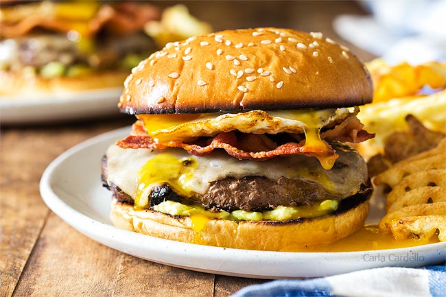

Umami Egg Burger

Description
The Umami Egg Hamburger recipe is a great dish for those who prefer a savory hamburger with lots of protein. Easy to prepare and very delicious, we highly recommend this dish for anyone who enjoys sunny-side cooked eggs.
Ingredients
- 1 angus burger patty
- 1 egg
- 1 slice of cheddar cheese
- 1/4 teaspoon of pepper
- 1/4 avocado sliced
- 1 pretzel bun
Instructions
- Heat separate pan to 350 degrees Fahrenheit.
- Once pan is heated, spray olive oil to prevent egg from sticking, and then place unscrambled raw egg on to pan.
- Let cook for 5 minutes and turn off heat. Leave pan lid on for another 3 minutes to cook the top of egg until the egg yolk is covered in a light layer of cooked egg white. Then place on covered warming plate to prevent egg from going cold while the rest of burger is prepared.
- Heat grilling surface to 425 degrees Fahrenheit.
- Place burger onto grilling surface and grind 1/4 teaspoon of fresh pepper onto top of burger.
- Cook burger for 6-8 minutes, flipping the burger every two minutes on grilling surface to ensure even cooking on both sides.
- While burger is cooking put pretzel bun into toaster to toast the pretzel buns.
- Remove burger from grilling surface and place on pretzel bun.
- Gently remove sunny side up egg from pan and place on top of burger meat.
- Place cheddar cheese slice on top of sunny side up egg.
- Cut 1/4 of an avocado and slice thinly. Place the avocado slices on top of burger.
- Place the top of pretzel bun on top of avocado and the burger is ready to eat!